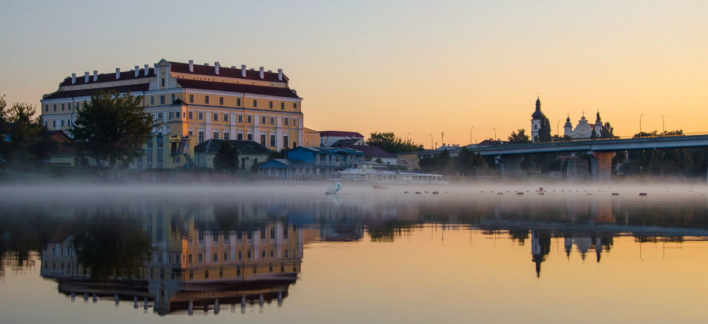
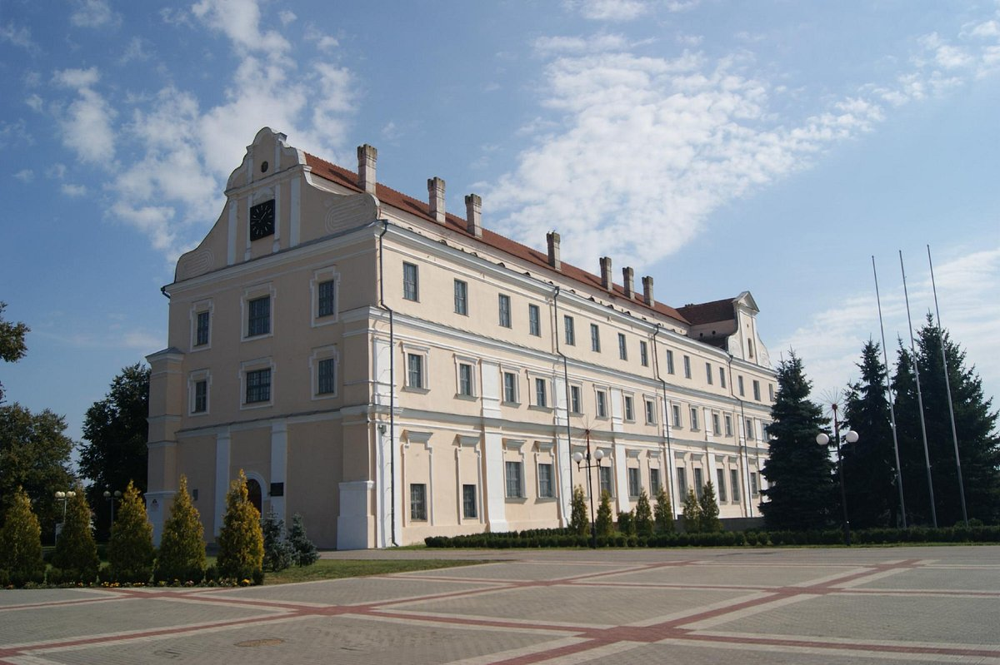
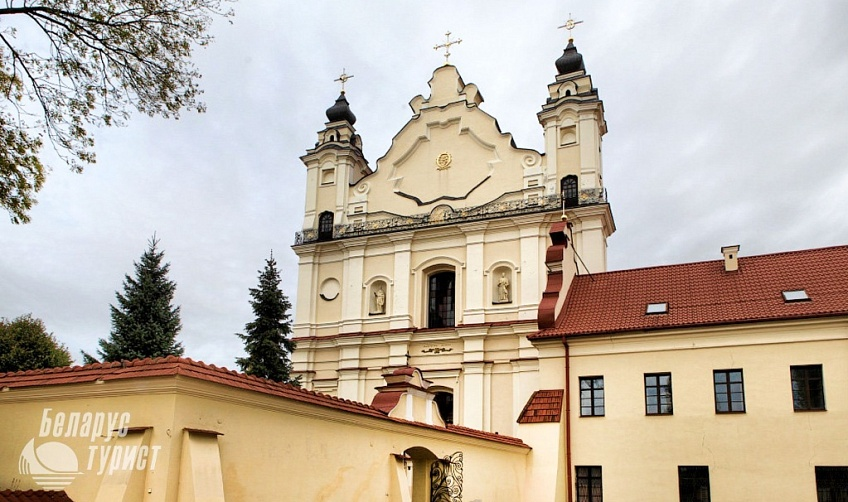
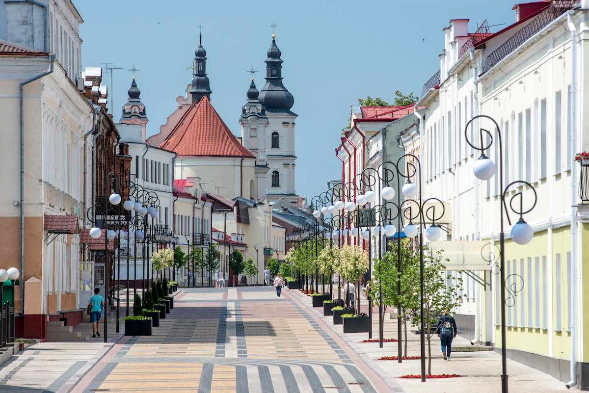
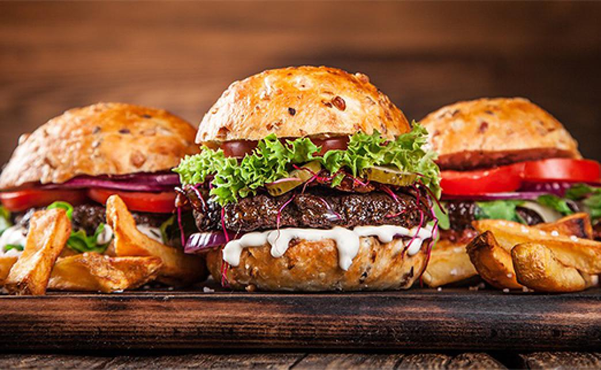
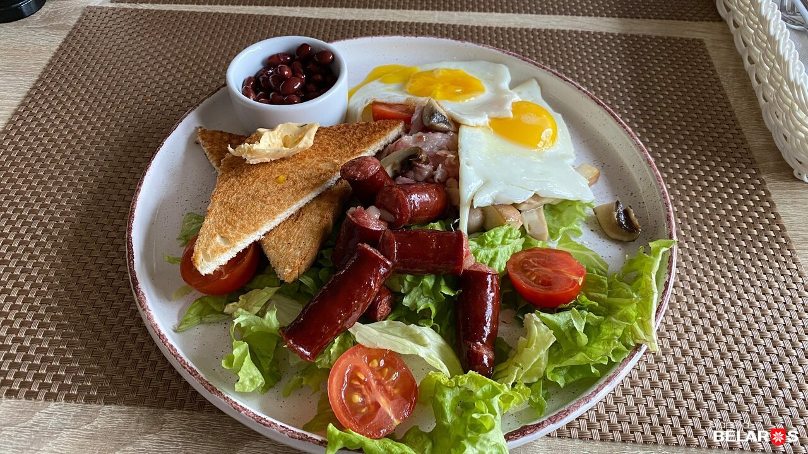
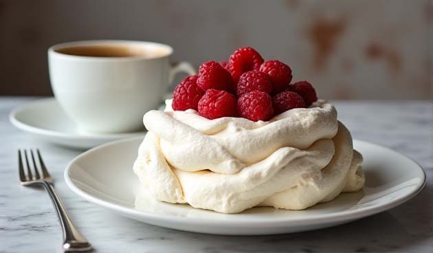
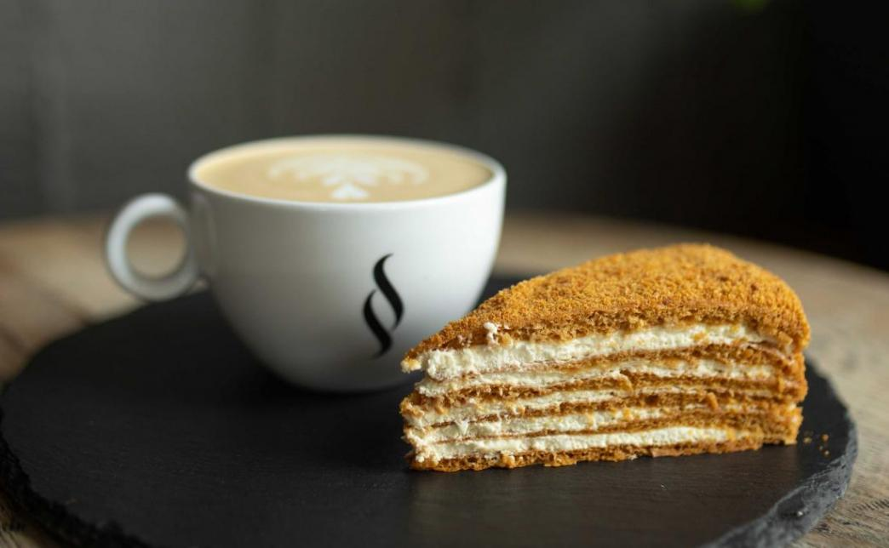

🏠 Квартира в центре Пинска

🏞️ Набережная и река Пина
Живописное место для прогулок, вид на слияние Пины и Припяти, уютные скамейки.
🚶 7-10 минут
🏛️ Музей Белорусского Полесья
Здание иезуитского коллегиума XVII века. Огромная коллекция природы и истории.
🚶 5-7 минут
⛪ Францисканский костёл
Величественный храм в стиле барокко с красивыми колоннами внутри. Главная гордость — уникальные резные деревянные алтари XVIII века и старинный орган с полутора тысячами труб.
🚶 10 минут
🚶 Пешеходная улица Ленина
«Музей под открытым небом»: купеческие особняки, старинная брусчатка «трилинка».
🚶 10 минут
🍔 Бургерная «Мумо»
Самый популярный бургерный в городе. Пицца, стейки, гриль-крылья. В историческом здании на улице Ленина.
🚶 7 минут
🍽️ Кафе «Бона Сфорца»
Уютное место с видом на костёл. Рекомендуют местную выпечку и кофе.
🚶 8 минут
🍰 Кафе «Лакомка»
Уютное кафе-кондитерская с советской историей. Огромный выбор свежей выпечки и тортов. Вкусно, недорого, по-домашнему.
🚶 8 минут
☕ Paragraph
Лофт-кофейня на набережной. Халвичный латте, вид на реку, уютный интерьер и отличный кофе.
🚶 10 минут